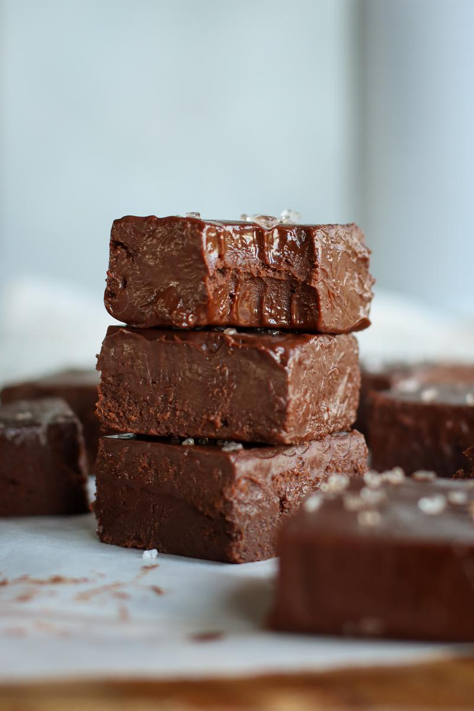
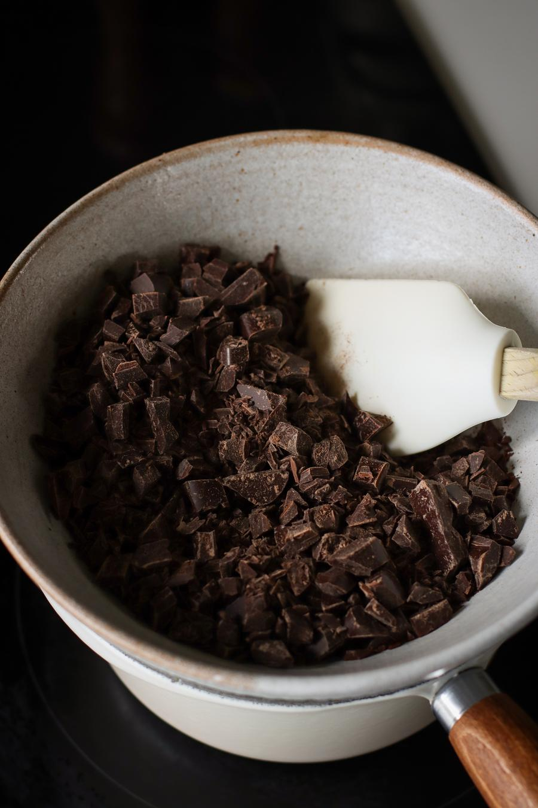
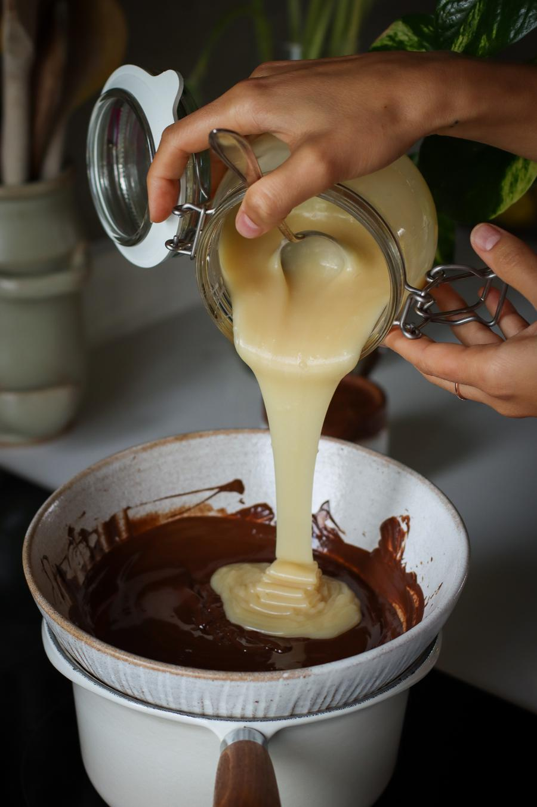
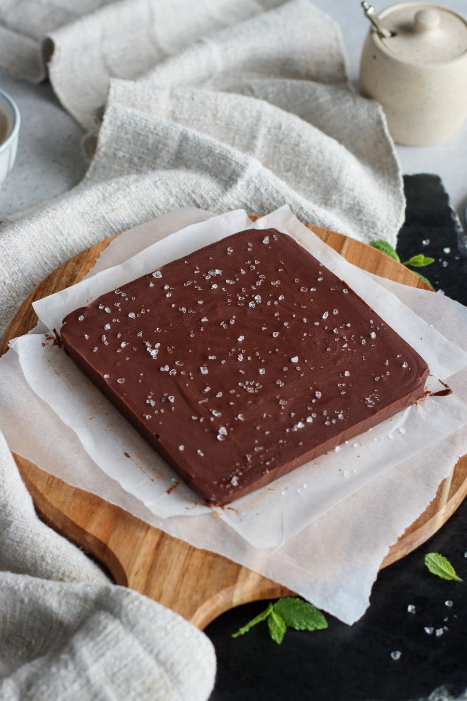
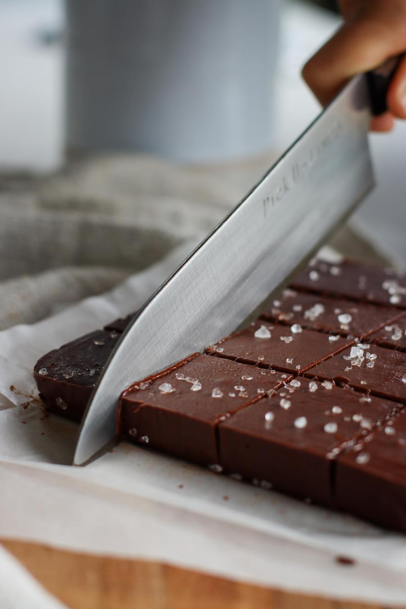

Vegan Chocolate Fudge

- 🍽️Servings: 16(small squares)
- 🍝Total time: 2 hr+10 min
- ⏱️Prep time: 10 min
- ❄️Freeze time: 2 hr
Ingredients
- 0.66 oz (19g) dairy-free dark chocolate, chopped
- 1 Tbsp + 1tsp (20ml) sweetened condensed coconut milk
- 1 pinch (0.3ml) pure vanilla extract
Optional garnish
Directions
- Fill a saucepan with 2 cm of water, and bring to a gentle boil. Place a heat-safe bowl on top of the pan to create a 'double boiler'. Place the chocolate in the bowl and stir often. The heat from the bowl will melt the chocolat

- Once the chocolate has melted, turn off the heat and stir the condensed coconut milk and vanilla into the chocolate.

- Line a 6 x 6 inch (16 x 16 cm) square baking dish with parchment paper and transfer the mixture to the dish. Sprinkle flaked sea salt on top if desired. Place in the freezer for at least 2 hours to harden.

- To make cutting easier, try running your knife under hot water before cutting the fudge. Enjoy!

Notes
- For the best texture, we recommend eating the fudge when it has just come out of the freezer.
Storage
- Store in an airtight container in the freezer for up to 2 months.